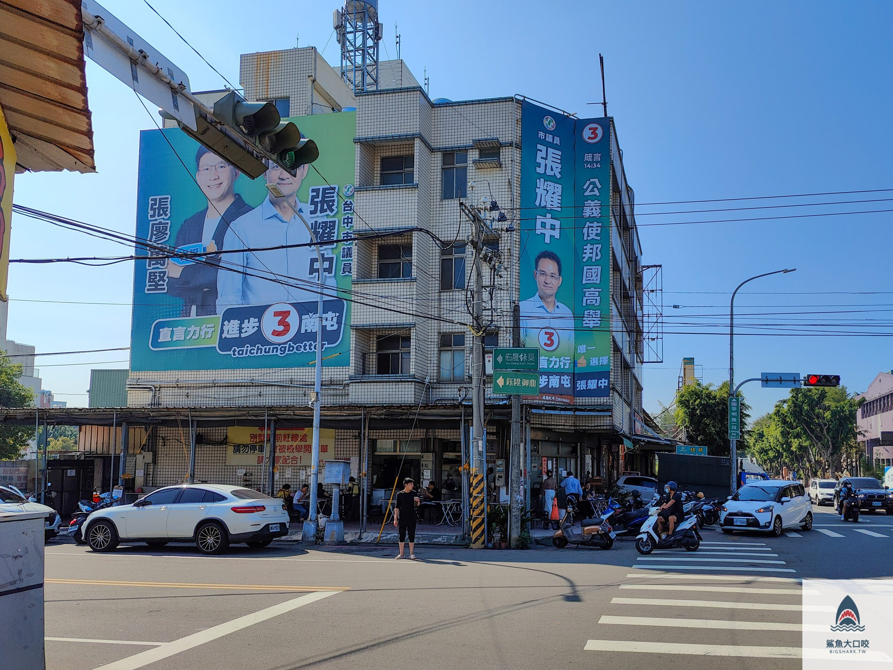

台中美食
逢甲位於臺中市西屯區的大型商圈
逢甲文華夜市位於逢甲大學側門，從文華路一直延伸到福星路，
消費族群以二、三十歲的年輕人為主。因其有著位於學區和接近市區的地緣關係，
逐漸成為臺中市夜市集團的龍頭。逢甲文華夜市與其它臺中市夜市最大不同之處，
在於其不單是以飲食著稱，也包含了各式各樣的商店，營業時間亦較長。

旅禾泡芙之家美村旗艦店(台中市西區美村路一段343號)
一間來自夢想中的甜點之家
擁有二十五年以上專業烘焙經驗的旅禾泡芙之家，白國文、李國溢師傅們秉持著從小對烘培的執著與熱忱， 在2009年開立第一間位於五權七街巷口的小小麵包店。 在人來人往的大街上，可以看到大台中人們手中拿著滿溢幸福的旅禾麵包，每一份都是來自真材實料、用心烘培的美好祝福。

三代爌肉飯台中早午餐人氣爌肉飯
台中南屯區美食《三代爌肉飯》，位於南屯區黎明路上過環中路後，接近楓樹社區一帶後，就可以看到楓平路與黎明路口有一家人氣三代爌肉飯
現在選舉期間，連一代一代都看不到，滿滿的候選人廣告，只好等選舉完才會露出三代目爌肉飯，如果是慕名來用餐的話，停車切記要小心哦，店家還因為這樣貼上大大的告示牌。
